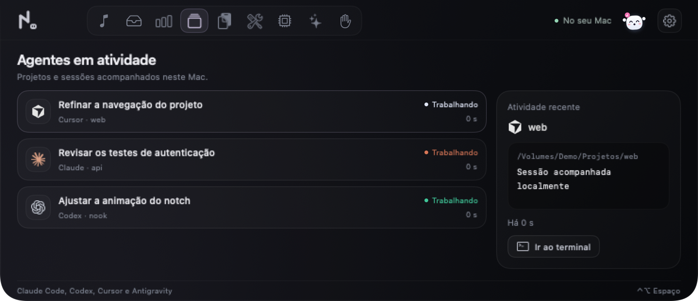
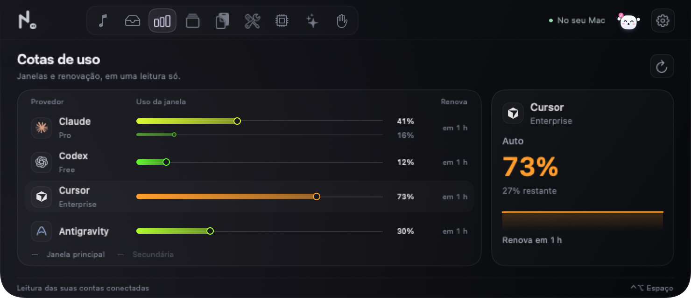
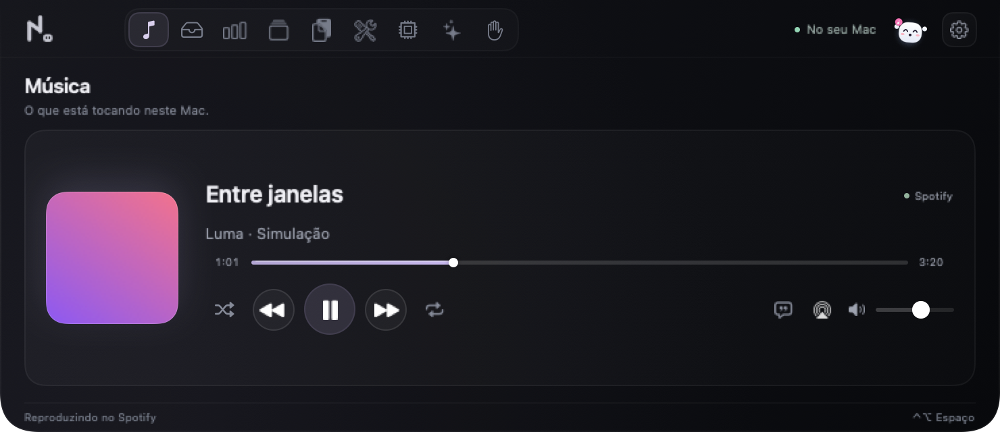

Nook
›_
Codex trabalhandoTarefa concluída
46% livre12% livre
A cota à vista no notch
O Nib reage quando a janela chega perto do limite
Agentes em atividade
Cotas de uso
Música, sem trocar de janela



Nook · macOS e Windows
nook-notch-beta.vercel.app